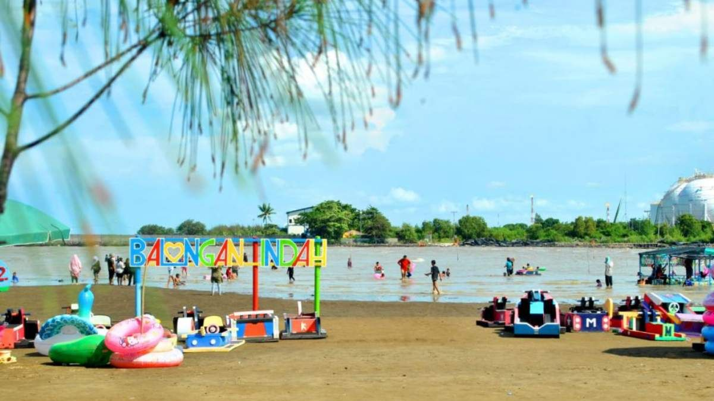
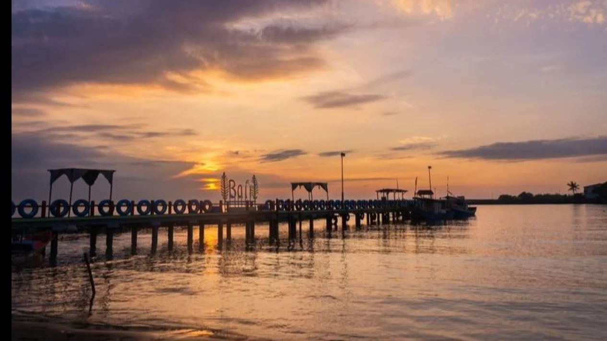

Pantai Balongan Indah: Pesona Senja di Utara Jawa
Nikmati keindahan pantai, kuliner laut segar, dan wahana keluarga di Indramayu.
Jelajahi Sekarang✨ Fasilitas & Aktivitas

Area Bermain Anak
Tempat yang aman dan menyenangkan untuk keluarga dan anak-anak.

Wahana Air Seru
Nikmati berbagai wahana air seperti perahu pisang dan perahu karet.

Spot Sunset Terbaik
Saksikan pemandangan matahari terbenam yang memukau di tepi pantai.
🍽️ Kuliner Laut Segar

Ikan Bakar Sambal Terasi
Ikan segar yang dibakar dengan bumbu khas pesisir Indramayu.

Cumi Goreng Tepung
Cumi renyah dengan rasa gurih yang cocok sebagai camilan tepi pantai.
Es Kelapa Muda
Penyegar alami yang sempurna setelah bermain di bawah sinar matahari.
🎬 Video Ulasan Pantai
Tonton ulasan visual tentang keindahan dan suasana Pantai Balongan Indah.
ℹ️ Info Lokasi & Rute
Panduan penting untuk menuju ke Pantai Balongan Indah:
- Alamat: Desa Balongan, Indramayu, Jawa Barat.
- Jam Operasional: 07.00 - 18.00 WIB.
- Tips: Kunjungi saat sore hari untuk menikmati matahari terbenam.